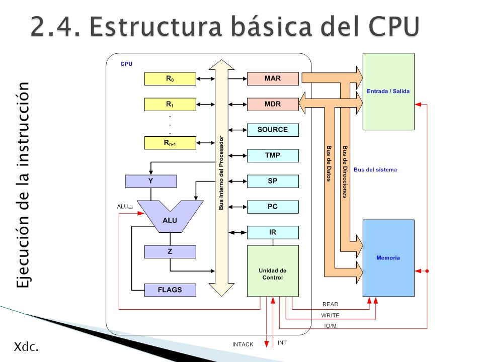

La Unidad de Procesamiento (CPU) controla el funcionamiento del computador y lleva a cabo sus funciones de procesamiento de datos. Frecuentemente se le llama procesador.
Un procesador, incluye tanto registros visibles por el usuario como registros de control/estado. Los registros visibles por el usuario pueden ser de uso general o tener una utilidad especial, mientras que los registros de control y estado se usan para controlar el funcionamiento del procesador, un claro ejemplo es el contador de programa.
Lleva a cabo una gran variedad de:
La CPU controla las operaciones básicas del ordenador enviando y recibiendo señales de control, direcciones de memoria y datos de un lugar a otro de la computadora a través de un grupo de canales llamados BUS.
La Unidad Central de Proceso está constituida internamente por:
Unidad Aritmético-Lógica (ALU)
Recibe los datos sobre los que efectúa operaciones de cálculo y comparaciones. Toma decisiones lógicas (determina si una afirmación es correcta o falsa mediante reglas del algebra de Boole) y devuelve luego el resultado. Todo ello bajo supervisión de la unidad de control.
La Unidad de Control
La unidad de control le indica al resto del sistema como llevar a cabo las instrucciones de un programa. Comanda las señales electrónicas entre la memoria y la unidad aritmético-lógica, y entre el CPU y los dispositivos de entrada y salida. Para ejecutar cualquier programa, cada comando del mismo se desglosa en instrucciones.
Los procesadores utilizan la segmentación de instrucciones para acelerar la ejecución. La segmentación de cauce se puede dividir en ciclo de instrucción en varias etapas separadas que operan secuencialmente, tales como la captación de instrucción, decodificación de instrucción, cálculo de direcciones de operando, ejecución de instrucción y estructura del operando resultado.
A continuación se muestra cómo se organiza un procesador, para esto se tiene que considerar los siguientes requisitos:
Captar instrucciones: el procesador lee una instrucción de memoria (registro, cache o memoria principal).
Interpretar instrucción: la instrucción se codifica para determinar qué acción es necesario.
Captar datos: la ejecución de una instrucción puede exigir leer datos de memoria o de un módulo de E/S.
Procesar datos: la ejecución de una instrucción puede exigir llevar a cabo alguna operación aritmética o lógica con los datos.
Escribir datos: los resultados de una ejecución pueden exigir escribir datos en la memoria o en el módulo de E/S.
Para hacer estas cosas, el procesador necesita almacenar instrucciones y datos temporalmente mientras una instrucción está ejecutándose, en otras palabras el procesador necesita una pequeña memoria interna, también llamados registros.
